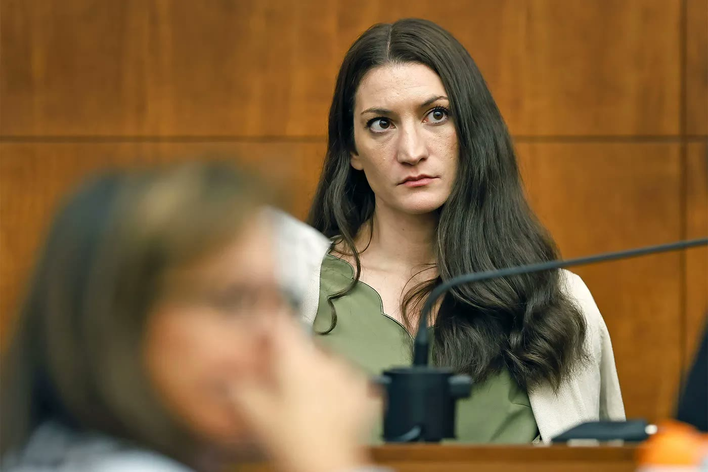

Iran Conflict Update
Official military action ceases, economic pressure intensifies

Official military action ceases, economic pressure intensifies
With thousands of invaders remaining in the Spanish enclave of Ceuta, crime rates have skyrocketed in the past 2 weeks.
Many residents express lack of safety for women of children after a spike in police reported sexual assaults, many against minors.
Spanish Prime Minister Pedro Sanchez states that the issue was been resolved.
Protests erupted from two sides this week.
The citizens of Ceuta protested for the removal of invaders, and the Moroccans protested demanding asylum.
Many residents of Ceuta in large groups drove out invaders themselves, burning camps and belongings left behind.
Ceuta police attempted to intervene but lack numbers.
The United Kingdom in an effort to reduce crime committed by migrants living in the country, distributed pamphlets titled "Understanding behaviours and expectations in the UK". This outlined basic crimes including rape and harassment, stating "If you commit rape, you could go to jail and could be deported". Although the pamphlets were printed in English and many of the migrants do not read english, UK officials believe this will reduce violent crime.
The popularity of this trial has exploded.
Clancy admits to killing her three children but it is up to the jury to convict on murder chargers, manslaughter, or not guilty by reason of insanity.
Regardless of the verdict, an outrage has erupted on social media sites like TikTok.
Many women on these apps claim fervently that Clancy is innocent because of possible postpartum depression and drug use.
The apparent mass psychosis of these women has brought up the bigger of how dangerous social media echo chambers can be for an individual's mental health and wellbeing.
SCOTUS favored the side of President Trump, removing an injunction which now allows more oversight of mail-in ballots ahead of November midterm elections. The USPS will enforce specific envelope designs including a unique barcode. Some states, including California, have vowed to continue to challenge this new ruling on mail-in voting.
After the original judge was recused in the court that found Karmelo Anthony guilty of murder, a motion for a retrial was heard. This motion was eventually denied by the new judge presiding over the case. The defense will now attempt to appeal to the Fifth Court of Appeals in Dallas, TX.
This year, Social Studies classes in Florida will be required to teach how socialism can lead to communist regimes rising to power.
"I think think this is a good thing. Not only do our students currently not know anything about socialism, but they don't know anything about the free market either.", said Florida Congressman Carlos Gimenez,
"We don't want to indoctrinate anybody, we just want to well them what happened".
Mississippi's Department of Transportation announced their "Big Fix", a $400 million plan to rehabilitate the I-20 and I-55 freight corridor. Construction is scheduled to begin in September and will span multiple phases over a scheduled two year period. Some of these phases include complete closures for I-20 eastbound and westbound, meaning that commuters and freight will have to find alternate routes.
Meta settled this week, paying out over 17 billion dollars to resolve the claim that it's Facebook and Instagram platforms are design to addict children and violate privacy laws.
The company must now implement daily time limits based on user age and advanced parental controls into its features.
Despite this federal suit, individual states like Florida claim that they are going to bring additional suits for supposed wrongdoing.
The season is starting today but there is still a grey area on who is allowed to play this season.
Originally a judge ruled that the NCAA would have to allow former professional football players to be eligible to play in the NCAA as long as they had additional years of eligibility.
The Southeastern Conference, among others, announced that it would levy heavy fines against any schools who allowed former NFL athletes on their college roster.
Most recently another judge has ruled that these individual conferences are not allowed to levy these punishments.
This constant back and forth has brought many to desire a federal antitrust exemption to be granted to the NCAA, allowing them to essentially govern themselves and be immune from outside judges.
Sen. Ted Cruz from Texas has brought this legislation forward but the bill has a long journey ahead, granting no reprieve for this season.
We should not be dismayed when we witnesses the great injustices of this world, for we know that we live in a fallen world. It is only with Christ backed truth that we can refute the wickedness of the world. While we were still wicked, Christ died for us so that we could be made righteous with him. This invitation of righteousness is extended to the world around us. It is essential that we share the good news even in the face of wickedness. Pray for those around you and those elected above you that they would be moved by the Holy Spirit to make wise decisions.